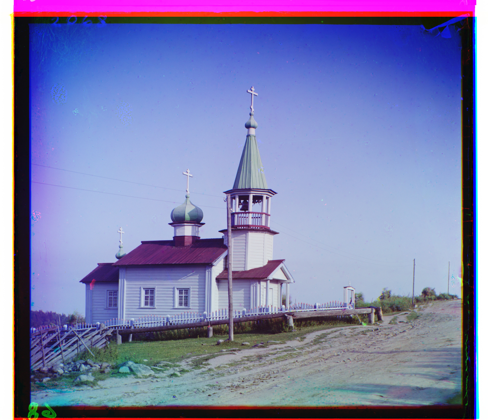
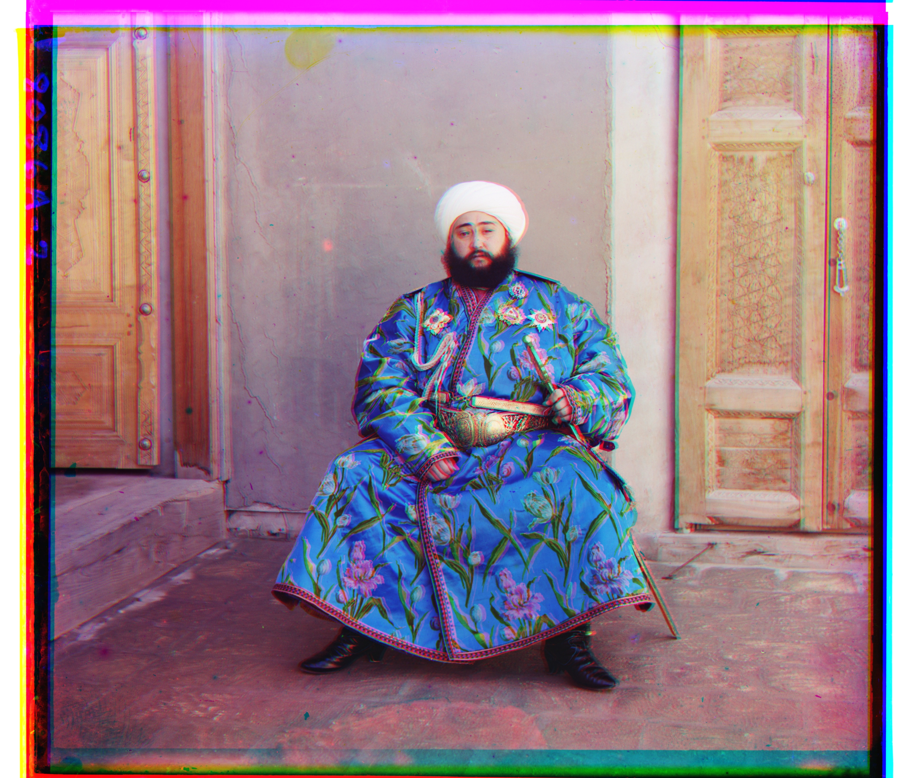
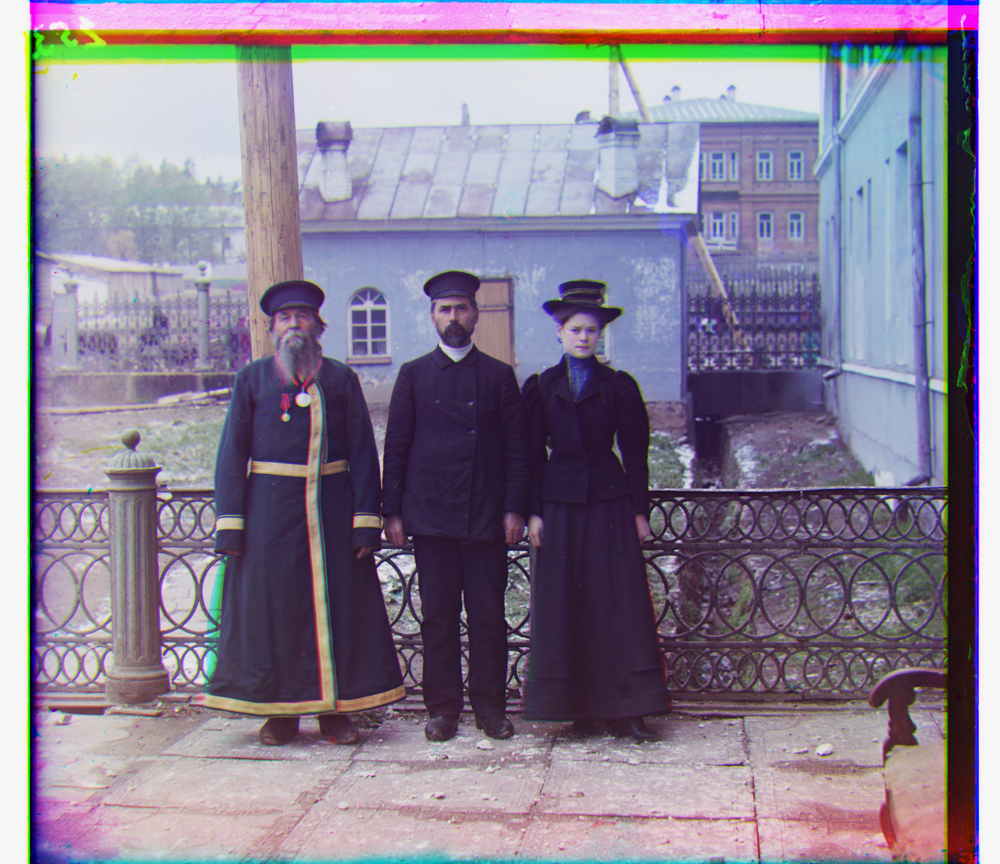
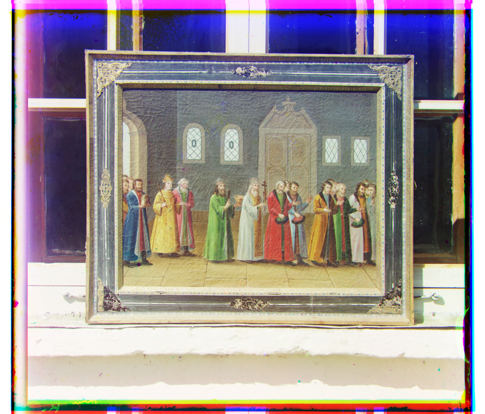
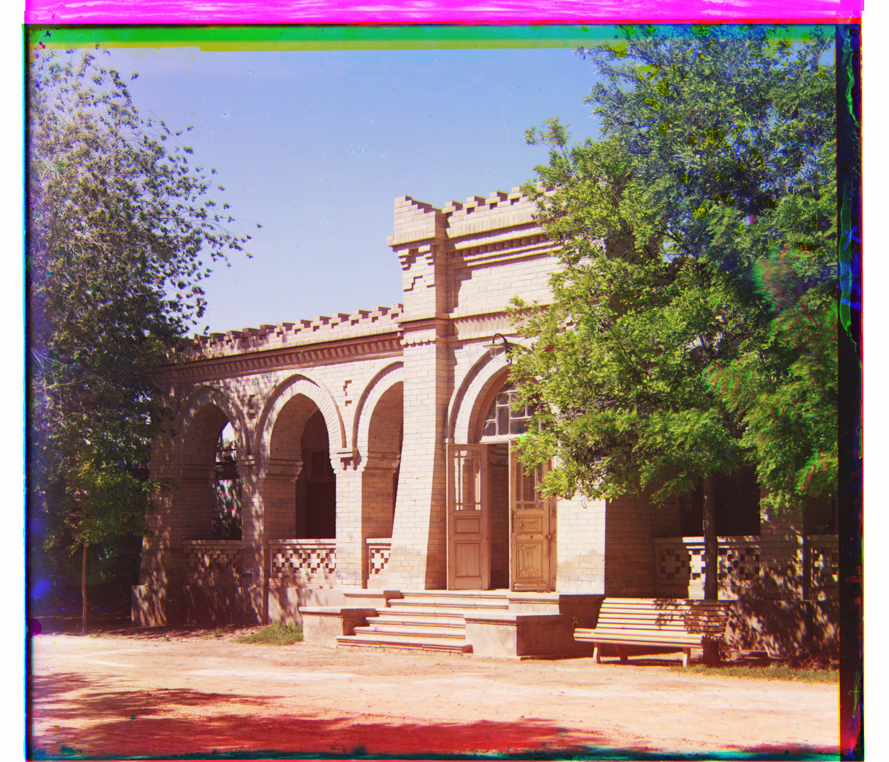
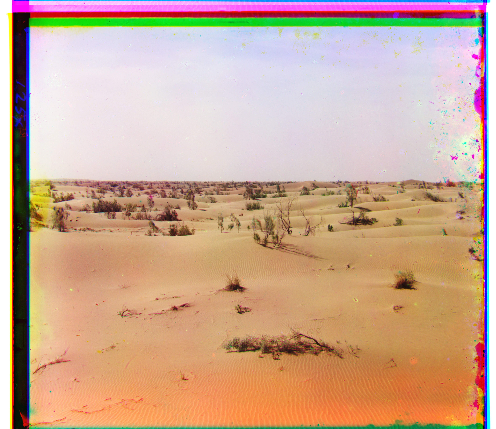
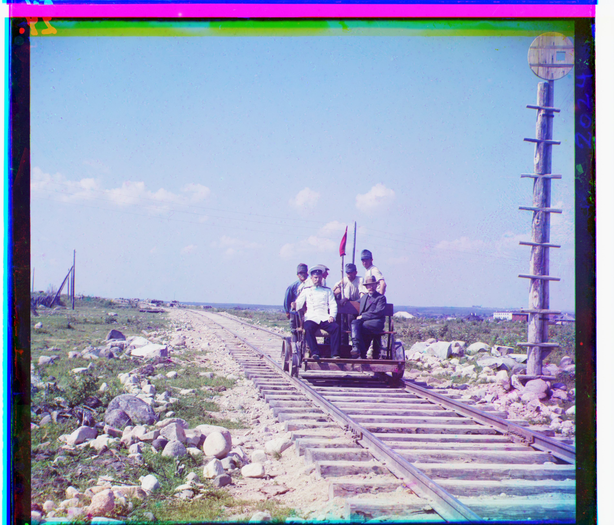

Overview
The goal of my work in this project was to take the separated color channels provided in the images, overlay them, then align them to reconstruct the original color image. Since real world colors are usually made up of a combination of the color channels (R, G, B), aligning the images by measuring overall brightness at each pixel and using similarity metrics would allow for a clean alignment. This technique leverages the natural shadows and bright points of an image to get an aesthetic color image reconstruction.
Approach
The user has to input several parameters, such as the filename, the metric of choice to determine optimal alignment, the crop proportion, and the search window size (delta). With this information, the image pyramid alignment algorithm will run. The current approach to the algorithm is to use single scale alignment (ignore the image pyramids) if the image has few enough pixels corresponding to a JPEG. Larger files (such as TIFFs) will need to be aligned using the optimized image pyramid alignment.
- Metric used: Mostly L2; After testing both L2 and NCC on the JPEG images, I decided to use L2 for all remaining images because it ran faster with similar results.
- Search window size for single-scale:[-15, 15]
- Crop proportion: 0.1 (i.e. 10% off each border)
Single-scale alignment
Results on the low-resolution JPEGs — cathedral, monastery, and tobolsk — using exhaustive search over a small window.
Upon inspection of the JPEGs, each color channel image was about 390 pixels wide and about 340 pixels high, so this informed the base case minimum size that would allow an image to bypass the image pyramids.| Image | L2 | NCC |
|---|---|---|
| cathedral |  |
 |
| monastery | 
|

|
| tobolsk | 
|

|
Multi-scale pyramid alignment
Results on all 14 provided full-resolution images, using the coarse-to-fine pyramid so alignment stays fast even on the large .tif scans.
| Image | L2 output and alignment details |
|---|---|
| ilemselga |  |
| harvesters |  |
| self_portrait |  |
| emir |  |
| siren |  |
| cathedral | |
| monastery | |
| icon | |
| tobolsk | |
| melons |  |
| three_generations |  |
| church |  |
| religous_painting |  |
| wharf |  |
My own examples
Three additional images downloaded from the Library of Congress Prokudin-Gorskii collection, run through the same pipeline.
| Image | L2 output and alignment details |
|---|---|
| brick |  |
| desert |  |
| handcar |  |